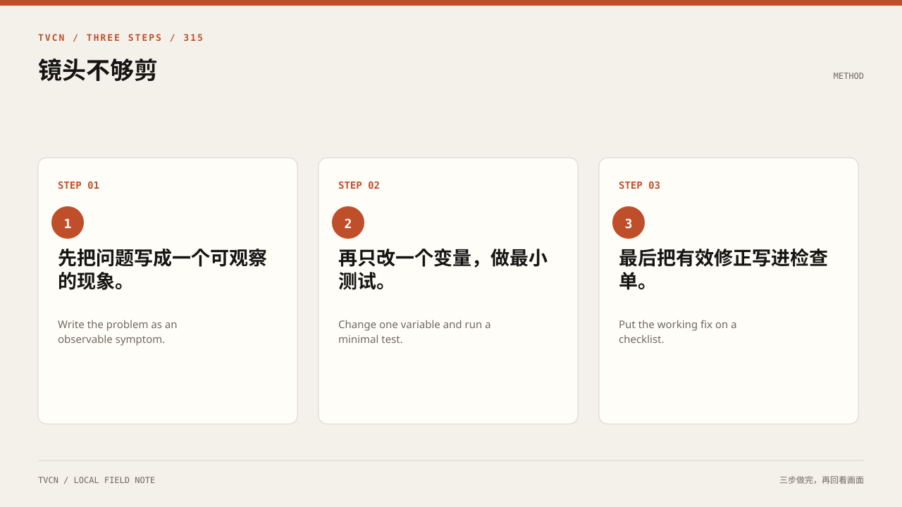

现场
补全景、近景、插入、反打；每个景别至少两条。
怎么做
- 每个动作至少拍全景、中景、特写各一条。
- 加插入镜头：手、脚、道具、门缝。
- 每条多留三秒头尾，给剪辑留余地。
别踩
别一个长镜头拍完就收工；剪辑时没有替代。
DIAGRAM / Method card
三步流程

三种原因
针对“镜头不够剪”，先按三个方向排查；每次只改一个变量，改完录 30 秒对比，看变化跟着哪个环节走。
| 原因 | 现场信号 | 5 分钟验证 |
|---|---|---|
| 只拍 master | 一条全景从头到尾，剪到第二句就没有画面 | 把每个台词段拆成两个角度 |
| 没有 insert | 动作细节全靠演员表演，剪不进去 | 补手、门、杯子、手机屏幕 |
| 没有 reaction | 对话只有说话的人，没有听话的人 | 每个回合补一个反应镜头 |
现场诊断
- 把剧本按句列成剪辑点，每句标“谁说、谁听、手上做什么”。
- 在时间线上放一遍，数每个台词段有几个可用角度。
- 把缺口写成拍摄清单：缺 wide、缺 insert、缺 reaction，分开补。
修法
覆盖不是多拍，是把剪辑需要的“关系、动作、反应”各拍一条。先保证每个台词段有两个角度，再谈美感。
- 每个场景先拍 1 条 wide，保人物位置和空间关系。
- 每个台词段拍 2 个 medium：一个偏向说话者，一个偏向听者。
- 补 3 个 inserts：手、道具、环境；每个只拍一个动作。
- 每个回合补 1 个 reaction，留 2 秒开机前和关机后。
- 转场拍 2 秒干净的 tail 和 head，给剪辑留把手。
失败案例
处理“镜头不够剪”时，下面三种做法会更糟；先选一个替换动作，别同时改三个变量。
| 失败做法 | 为什么会更糟 | 替换动作 |
|---|---|---|
| 全景重复剪 | 观众看不出时间推进，只看到同一张脸 | 用 inserts 和 reaction 切信息 |
| 越轴补角度 | 机位跨轴，空间突然反了 | 先在纸上画轴线再补 |
| 只拍漂亮空镜 | 空镜没有动作，剪进去像停顿 | 空镜里放一个可辨认的动作 |
验收表
验收不是“感觉好了”，是这四项都能指认、能回放、能记录。
| 验收项 | 通过线 | 记录 |
|---|---|---|
| 台词段角度 | 每段至少有 wide + medium 两个可用角度 | 时间线标记 |
| inserts | 每个动作细节有独立镜头 | 拍摄清单 |
| Reaction | 每个回合有听者的反应 | 回放对话段 |
| 转场把手 | 每个转场前后有 2 秒干净画面 | 检查 tail/head |
图片说明：本页封面、图解与步骤图是编辑示意或结构图，不是本页实测照片，也不能当作器材测试证据；AI 辅助生成的图会在图注标出。判断器材或画面，以正文的测试条件与现场记录为准。